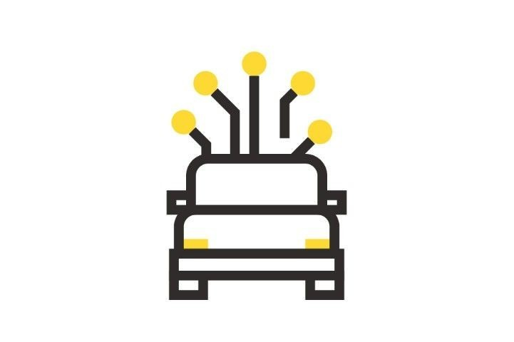

인공지능이란? 참고문헌
인간의 학습능력과 추론능력, 지각능력, 자연언어의 이해능력 등을 컴퓨터 프로그램으로 실현한 기술.
-
자연언어처리 분야에서는 이미 자동번역과 같은 시스템을 실용화하며, 특히 연구가 더 진행되면 사람이 컴퓨터와 대화하며 정보를 교환할 수 있게 되므로 컴퓨터 사용에 혁신적인 변화가 오게 될 것이다.
-
전문가시스템 분야에서는 컴퓨터가 현재 인간이 하고 있는 여러 가지 전문적인 작업들(의사의 진단, 광물의 매장량 평가, 화합물의 구조 추정, 손해 배상 보험료의 판정 등)을 대신할 수 있도록 하는 것이다. 여러 분야 가운데서도 가장 일찍 발전하였다.
-

컴퓨터가 TV 카메라를 통해 잡은 영상을 분석하여 그것이 무엇인지를 알아내거나, 사람의 목소리를 듣고 그것을 문장으로 변환하는 것 등의 일은 매우 복잡하며, 인공지능적인 이론의 도입 없이는 불가능하다. 이러한 영상 및 음성 인식은 문자 인식, 로봇 공학 등에 핵심적인 기술이다.
-
신경망(neural net)은 비교적 근래에 등장한 것으로서 수학적 논리학이 아닌, 인간의 두뇌를 모방하여 수많은 간단한 처리기들의 네트워크로 구성된 신경망 구조를 상정하는 것이다.